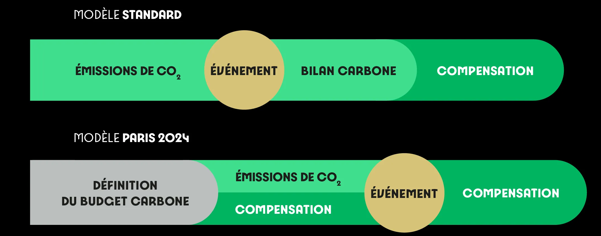
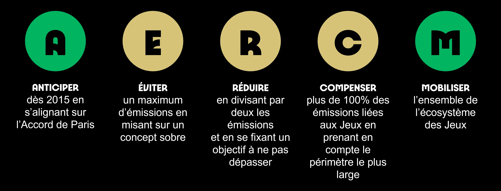

Le principal objectif de ces Jeux Olympiques est de respecter l'Accord de Paris en matière de climat. Pour cela, Paris 2024 s'associe avec des organisations comme la WWF. Loin d'ignorer son impact écologique, l'organisation des JO souhaite tout de même faire les efforts nécessaires à une époque où la transition écologique n'est plus une option.
Au sujet de l’empreinte carbone, Paris 2024 compte réduire de moitié les émissions de gaz à effet de serre, et pour se faire, plusieurs leviers vont être tirés.
 Tout d'abord, ces JO s'appuieront sur des infrastructures pour la plupart déjà en place, réduisant ainsi les constructions et de ce fait l'empreinte carbone. Ensuite, toute énergie utilisée lors de ces jeux sera 100% renouvelable, les moyens de transport préconisés seront les transports en commun, les produits alimentaires proposés seront issus de l'alimentation durable. Pour imaginer de nouvelles solutions pour réduire les émissions, Paris 2024 compte aussi faire appel aux PME et aux entreprises de l'économie sociale et solidaire, rejoignant dans le même temps les objectifs en rapport à l'emploi.
Un Comité de transformation écologique des jeux, qui est composé de neuf experts du climat, a été mis en place pour accompagner Paris 2024 sur sa stratégie environnementale à travers des conseils et un suivi des actions écologiques.
En plus de cela, comme dit précédemment, Paris 2024 travaille en étroite collaboration avec la WWF France pour définir la stratégie environnementale et les objectifs climatiques.
Pour la réduction de 55% des émissions, la WWF a émis 80 propositions dont certaines citées précédemment. Parmi ces recommandations, 80% ont été retenues par Paris 2024.
Cependant et malgré toutes ces mesures, l'impact environnemental des Jeux Olympiques de Paris 2024 reste très important. Même en atteignant l'objectif de réduction de 55%, c'est 1,560 mégatonnes de de CO2 qui seront émis, soit l'équivalent de la consommation annuelle de 130 000 français ou encore 808 080 000 km en voiture. Beaucoup de spectateurs viendront de l'étranger, il y aura donc un nombre important de déplacements en avion avec pour destination ces Jeux Olympiques, à l'heure où l'avion est le moyen de transport le plus pollueur de la planète.
De plus, des chercheurs s'interrogent sur ce taux de réduction et ont du mal à apercevoir comment celui-ci est réalisable. Pour ce qui est de la "compensation" , certains jugent cette méthode insuffisante, car le suivi des actions de compensation est souvent faible et il n'y a aucune assurance que tout soit fait correctement. De plus, "compense" n'enlève absolument pas les effets des émissions qui sont incontrôlables.
En résumé, malgré des efforts et des partenariats en faveur de l'environnement non négligeables, l'impact écologique et climatique de ces Jeux Olympiques est énorme et destructeur.